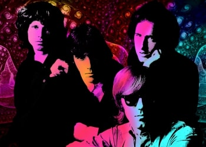

|

The Doors (с англ. — «Двери») — американская рок-группа, созданная в 1965 году в Лос-Анджелесе, оказавшая сильное влияние на культуру и искусство 60-х годов. Загадочные, мистические, иносказательные тексты песен и яркий образ вокалиста группы, Джима Моррисона, сделали её едва ли не самой знаменитой и равно же противоречивой группой своего времени. После смерти в 1971 году Джима Моррисона оставшиеся музыканты продолжили выступать и записываться в формате трио, а в 1973 году группа прекратила своё существование. В общей сложности в США было реализовано 32 500 500 копий их альбомов. Группа продала более 100 миллионов альбомов по всему миру. The Doors стала первой американской группой, у которой было 8 золотых альбомов подряд. В 1993 году были введены в Зал славы рок-н-ролла.
Состав:
• Джим Моррисон — ведущий вокал, перкуссия (1965—1971)
• Рэй Манзарек — клавишные, перкуссия, бэк-вокал (1965—1973, 1978, 1993, 1997, 2000, 2011)
• Робби Кригер — гитара, бэк-вокал (1965—1973, 1978, 1993, 1997, 2000, 2011, 2013)
• Джон Денсмор — ударные, перкуссия, бэк-вокал (1965—1973, 1978, 1993, 1997, 2000, 2011, 2013)
Приглашённые музыканты:
• Харви Брукс — бас-гитара «Soft Parade»
• Лонни Мак — гитара Morrison Hotel (1970)
• Рэй Неаполитан — бас-гитара Morrison Hotel (1970)
• Джон Себастьян — губная гармоника Morrison Hotel (1970)
• Джек Конрад — бас-гитара (1971–1973)
• Бобби Рэй Хэнсон – ритм-гитара, бэк-вокал, перкуссия (1971–1973)
• Марк Бэнно — ритм-гитара L.A. Woman (1971)
• Джерри Шиф — бас-гитара L.A. Woman (1971, 1978)
• Рэйнол Андино — перкуссия (1978)
• Артур Барроу — синтезатор, программирование (1978; в треке "The Movie")
• Боб Глоуб — бас-гитара (в композиции 1978 года; "Albinoni – Adagio")
• Эдди Веддер — ведущий вокал (1993)
• Дон Уэс — бас-гитара (1993)
• Анджело Барбера — бас-гитара (2000)
• Дуг Лубан — бас-гитара (на альбомах Strange Days, Waiting for the Sun; Soft Parade)
Студийные альбомы:
• The Doors (январь 1967)
• Strange Days (октябрь 1967)
• Waiting for the Sun (июль 1968)
• The Soft Parade (июль 1969)
• Morrison Hotel (февраль 1970)
• L.A. Woman (апрель 1971)
• Other Voices (октябрь 1971) — без Джима Моррисона
• Full Circle (июль 1972) — без Джима Моррисона
• An American Prayer (ноябрь 1978) положенные на музыку записи голоса Джима Моррисона
|